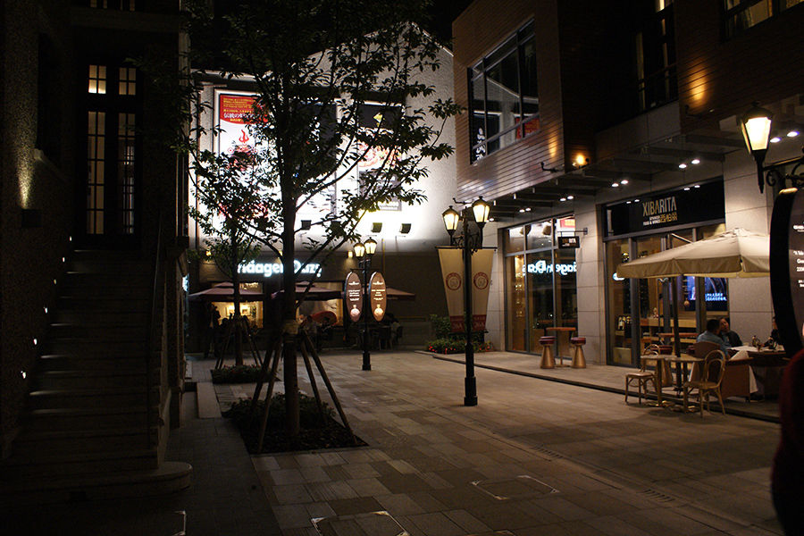
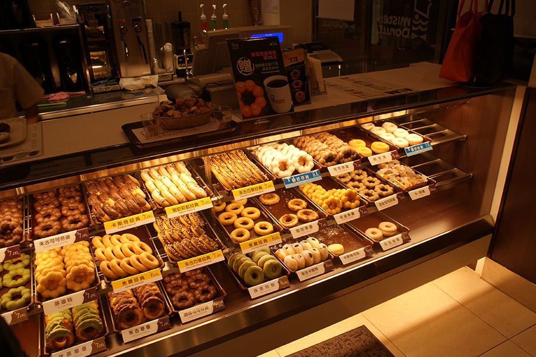
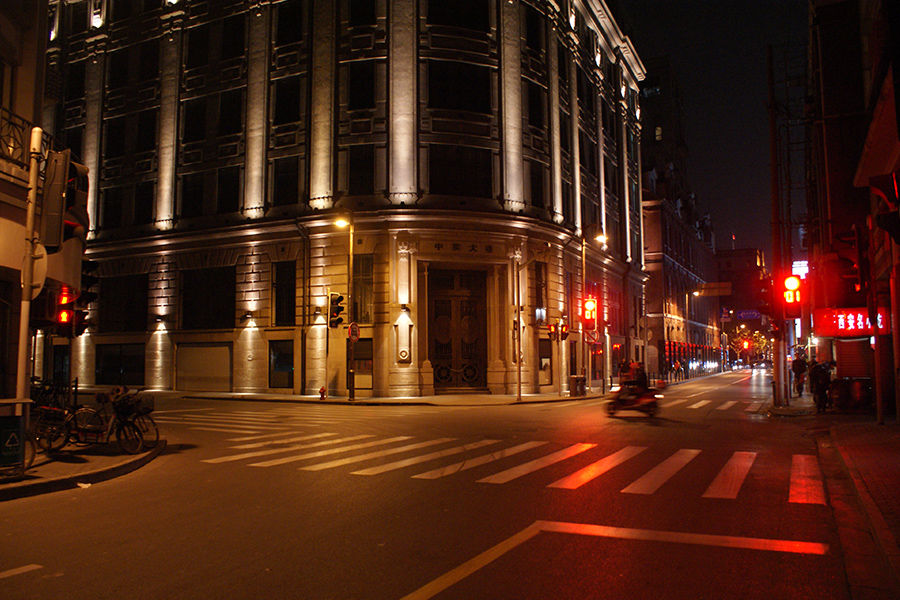

「魔都」上海之所以上海
魔都，大家不用说都懂，它就是超一线城市。在中国地位是第一，虽然很繁华，漂亮的大都市，很多人都是想挤进上海去过着繁华的生活，感觉没有那么简单的事情。就因为上海之所以上海，在这里生存不易，而且有很多浪漫的地方。
在魔都梦想开一间咖啡店是奢侈的事情，很自然是一些物价和房价都是非常贵的。而且上海还有一个别名，叫做“魔都”。

魔都的咖啡馆如此之多，是因为近几年来商业与经济的发展。却不知咖啡文化在这里，其实早已埋下了种子。循着那阵微微泛苦的醇香，似乎就能回到这座城市的过往年代。
魔都最好吃的甜甜圈，作为日本第一的甜甜圈品牌，他们家的独创具有QQ口感的芬迪铃已经累计售出10亿个，也即是平均每个日本人都吃掉了10个以上的芬迪铃。而在上海也同样大受欢迎，更有根据季节推出的时令口味。

繁华地方，淮海路一带新天地中西融合的都市不少，将上海传统的石库门里弄与充满现代感的新建筑融为一体。由幼稚走向成熟的石库门住宅构成了私密空间与公共空间交错的里弄社区。在这个社区内，居民在享受个人空间的同时，也更容易培养出更融洽更亲密的邻里关系。
魔都外滩法租界，曾经过去“有大英法兰西，大家勿来去”出自这个历史典故。配上灯光，至今看起来很繁华。

这是我深深眷恋的上海。